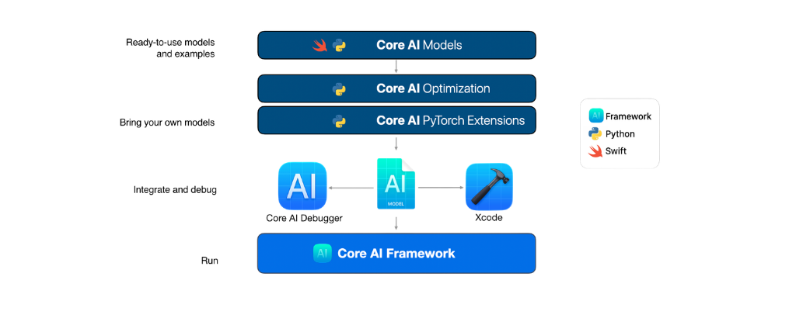

Core AI PyTorch Extensions (coreai-torch)¶
Bring PyTorch models to Core AI for on-device execution.
Overview¶
Core AI PyTorch Extensions (coreai-torch) is a Python package that bridges PyTorch and Core AI. You can use it to bring up an existing PyTorch model — exported as a torch.export.ExportedProgram — into a Core AI AIProgram ready to run on Apple hardware, traversing the FX graph node-by-node and mapping ATen operators to Core AI operations. You can equally use it to author Core AI models directly from PyTorch by composing the library of composite ops in coreai_torch.composite_ops, authoring new ops via register_torch_lowering, and authoring inline Metal GPU kernels through TorchMetalKernel and register_custom_kernels — all expressed as PyTorch nn.Modules and lowered to Core AI IR that the compiler recognizes and optimizes natively. For an overview of the Core AI ecosystem and how coreai-torch fits in, see What is Core AI?.
The bring-up pipeline has three steps. First, export your PyTorch model with torch.export.export to capture the computation graph. Second, decompose the exported program with get_decomp_table(), which lowers composite ATen ops to the primitive set that TorchConverter can map while preserving the operations that TorchConverter lowers as composite ops. Third, call TorchConverter().add_exported_program(ep).to_coreai() to produce the AIProgram.
For authoring, coreai_torch.composite_ops exposes well-known building blocks — such as attention, RoPE embeddings, RMSNorm, and gather-matmul (the MoE primitive) — as PyTorch modules. Passing these modules to externalize_modules preserves each one’s operation boundary as a named composite op that the compiler can recognize and optimize. When a PyTorch op has no built-in lowering rule, register a custom lowering function with register_torch_lowering. For compute-intensive custom operations, register_custom_kernels lets you author Metal kernel source and wire it into the conversion pipeline.
Quick example¶
import torch
from coreai_torch import TorchConverter, get_decomp_table
model = MyModel().eval()
ep = torch.export.export(model, args=(torch.randn(1, 10),))
ep = ep.run_decompositions(get_decomp_table())
coreai_program = TorchConverter().add_exported_program(ep).to_coreai()
coreai_program.optimize()
Choosing your workflow¶
Starting point |
Recommended approach |
|---|---|
Already have a decomposed |
|
Have an |
Either |
Have an |
|
Externalization lets the Core AI compiler optimize submodules independently or hand them off to specialized backends. See Conversion Workflows for detailed code and a decision guide.
Next steps¶
New users: Installing coreai-torch and Quickstart walk you through setup and your first end-to-end bring-up.
Authoring Core AI models from PyTorch: Composite Ops Guide covers the built-in composite op library, Custom Op Lowering shows how to author Core AI IR for new torch ops, and Custom Metal Kernels walks through authoring inline Metal GPU kernels.
Customizing bring-up: Conversion Workflows covers each bring-up workflow. Externalization covers preserving submodule boundaries as composite ops.
API reference: TorchConverter API reference documents every method and parameter. Composite ops API reference lists all built-in composite ops. TorchMetalKernel covers the Metal-kernel authoring API.
What is Core AI?¶
Core AI is a set of technologies for deploying machine learning models on Apple hardware, covering the full model deployment lifecycle: from model conversion, debugging, optimization, and integration into your app. Models run entirely on device on Apple silicon, with no server required.

The Core AI ecosystem consists of the following components:
Convert PyTorch models to the Core AI model format (
.aimodel) using Core AI PyTorch PackageCompress models with quantization, palettization, and pruning using Core AI Optimization
Load and run models in an app with the Core AI Framework
Inspect, debug, and profile models using Core AI Debugger
Get popular open-source covered models with optimization and Swift app integration code using Core AI Models
Links¶
Notices¶
PyTorch is a trademark of Meta Platforms, Inc.